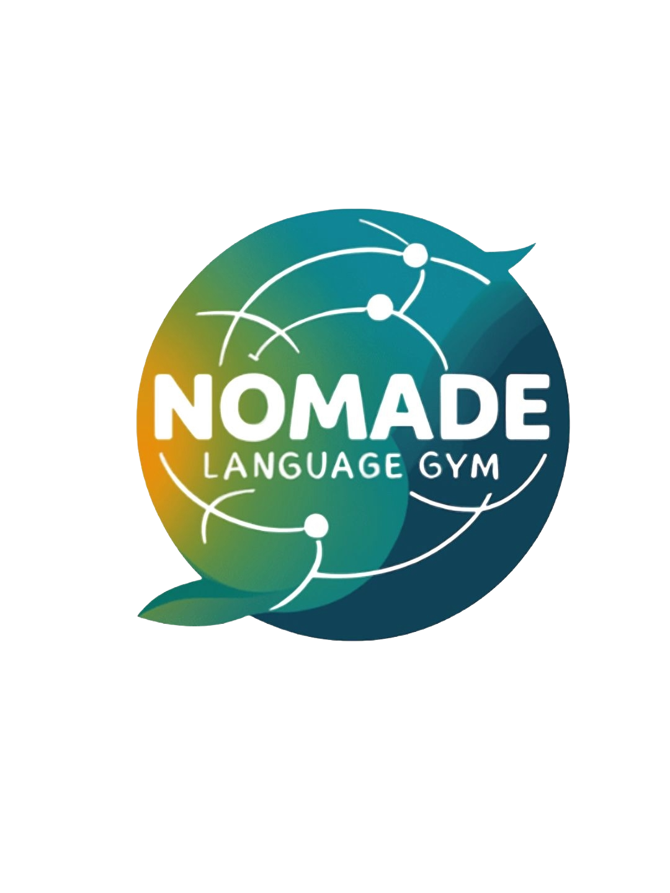
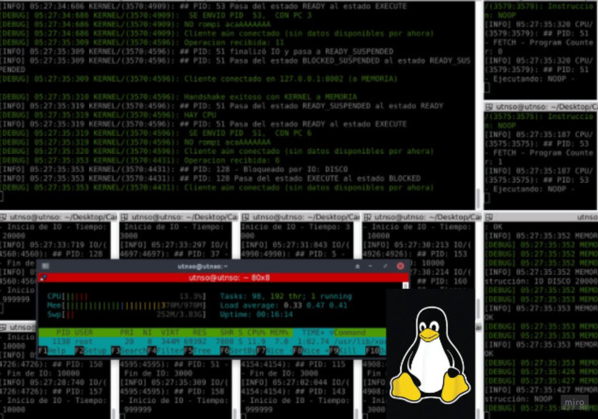
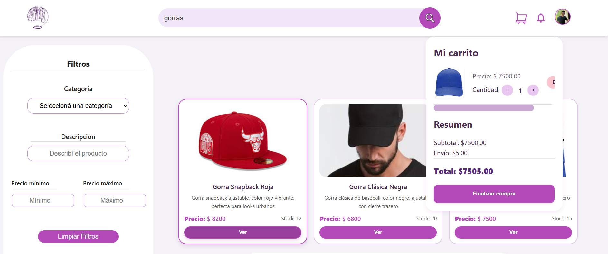
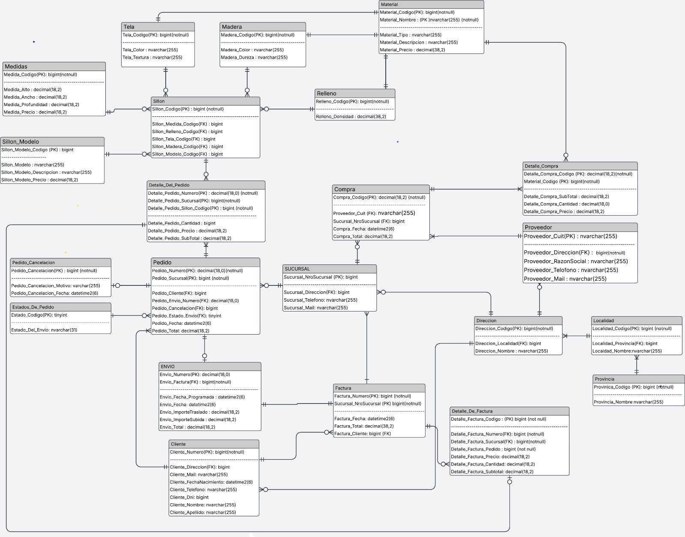
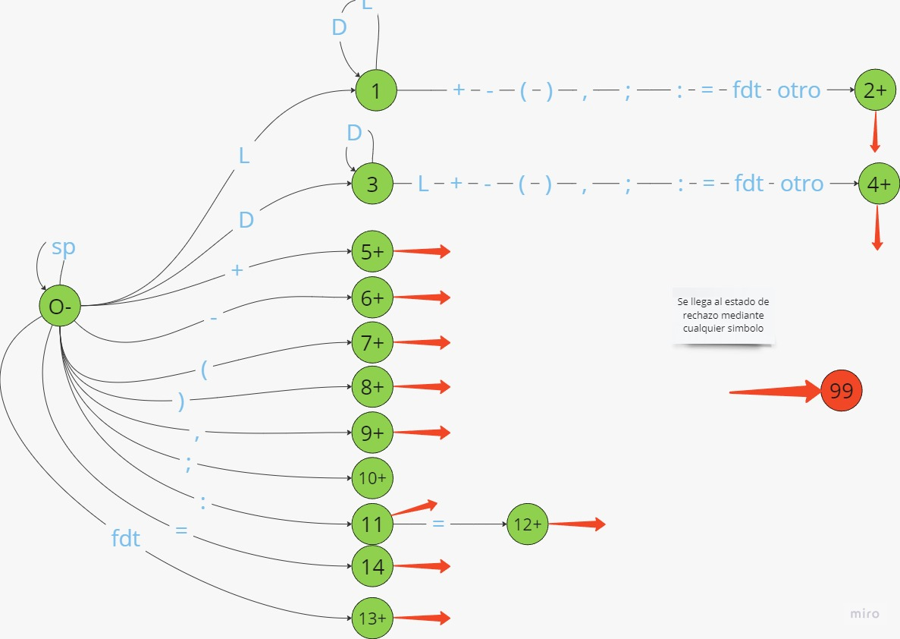

Experiencia
Consultor Técnico de IT / Analista de Soluciones
Fecha: 2025
Actué como asesor técnico principal para la definición digital de la academia de clases de español
Buena Suerte Spanish.
Mi rol consistió en auditar la propuesta tecnológica de una empresa hacia la escuela, logrando identificar los requerimientos
que realmente deseaban, previniendo la realizacion de una pagina "hace todo" reduceinto en grandisima medida
costos excesivos de desarrollo y mantenimiento.
Realicé un relevamiento de necesidades reales
que derivó en la simplificación de la arquitectura del proyecto, pasando de un sistema complejo de gestión de usuarios,
calendarios, clases y mensajeria a una solución de sitio estático, optimizando la performance y cumpliendo los objetivos comerciales del cliente.

Consultor Técnico de IT / Desarrollador Web
Fecha: 2025 - Actualidad
HTML CSS JavaScript
Responsable del diseño, desarrollo y mantenimiento del sitio web de Nomade English Gym .
Luego de realizar un relevamiento de las necesidades de la empresa,
el proyecto se centró en establecer
la identidad digital de la marca mediante una interfaz atractiva, simple y funcional orientada a celulares. Analizando los requerimientos y la situacion
de esta escuela, que recien comienza, se definio
creacion de un sitio web simple con un despliegue y mantenimiento muy economico.

Profesor particular de Programacion
Fecha: 2025 - Actualidad
Python C C++
Actualmente me encuentro dando clases particulares de programacion 1 a 1 de manera virtual para todos los niveles.
Gestiono estas clases de forma personalizada y brindando clases bajo demanda. Me adaptándo a
las necesidades específicas de cada alumno aunque suelo priorizar clases muy practicas.
Si conoces a alguien que este interesado, podes pasarle mi contacto sin problema.
Proyectos

Simulacion de sistema operativo Linux
Fecha: 2025
C MakeFile
Proyecto desarrollado para la materia de Sistemas Operativos. Consiste en un trabajo grupal (equipos de 5 alumnos)
donde se desarrolla un sistema simulado que integra varios componentesde un SO. En términos generales,
se debe implementar una aplicación distribuida con módulos independientes (CPU, Memoria, Kernel y Consola),
cada uno ejecutándose en Linux (en máquinas virtuales) y comunicándose entre sí (vía sockets). Siendo estos capaces de ejecutar
y soportar altar cargas de trabajo mediante la ejecucion de varios procesos simultaneamente.
Soo
Proyecto desarrollado en equipo para la materia Diseño de Sistemas de Información. MetaMapa es una plataforma open-source para mapeo colaborativo de información, pensada para ONG y organismos públicos. Podrias ser definida como una Red Social para la publicacion de Hechos de relevancia con un complejo sistema de Usuarios y de administracion.
Sistema de Mapeo comunitario
Fecha: 2025
Java Handlebars
MySQL Javalin
Hibernate AWS
Proyecto desarrollado en equipo para la materia Diseño de Sistemas de Información.
MetaMapa es una plataforma open-source para mapeo colaborativo de información, pensada para ONG y organismos públicos.
Podrias ser definida como una Red Social para la publicacion de Hechos de relevancia con un complejo sistema de Usuarios y de administracion.
Sistema de Mapeo comunitario
Mi aporte principal fue:
- Modelado del módulo de estadísticas basado en Domain-Driven Design...
- Diseño conceptual del sistema y participación activa...
- Implementación de vistas de estadísticas...
- Diseño manual del esquema de autenticación...
- Definición de rutas REST y criterios...

Tienda-Sol, E-commerce web cliente-pesado
Fecha: 2025
HTML Mongo
CSS React
NodeJS Docker
JavaScript KeyCloak
Cypress
Es una plataforma de E-commerce orientada a la venta de indumentaria, construida integralmente
con tecnologías JavaScript (React y Node.js).Podría definirse como una aplicación web robusta bajo el
modelo de Cliente Pesado y arquitectura en capas, diseñada para centralizar gran parte de la lógica de
negocio en el navegador y ofrecer una experiencia de usuario fluida y reactiva.
E-commerce
Proyecto desarrollado en equipo para la materia Diseño de Sistemas de Información. MetaMapa es una plataforma open-source para mapeo colaborativo de información, pensada para ONG y organismos públicos. Podrias ser definida como una Red Social para la publicacion de Hechos de relevancia con un complejo sistema de Usuarios y de administracion.

Diseño y desarrollo del Esquema de Base de Datos de sistema de sillones + Diseño e Implementación del Data Warehouse
Fecha: 2025
SQL Microsoft SQL Server
Transact-SQL
Dado un conjunto de datos, proveniente a una empresa de creacion, almacenamiento y distribucion de sillones,
sumado a un conjunto de requerimientos, se desarrollaron todos los pasos de principio a fin para la
creacion de un sistema de persistencia consistente, realizando la creacion del diagrama de entidad relacion,
normalizacion, creacion de tablas e indexacion de las mismas, creacion de triggers y consultas complejas
asegurando que el sistema sea seguro y performante. Sumado a esto, realizamos un modelo de inteliogencia
de negocios con diferentes tablas de hechos y dimensiones de interes.
Sql
Proyecto desarrollado en equipo para la materia Diseño de Sistemas de Información. MetaMapa es una plataforma open-source para mapeo colaborativo de información, pensada para ONG y organismos públicos. Podrias ser definida como una Red Social para la publicacion de Hechos de relevancia con un complejo sistema de Usuarios y de administracion.

Diseño y desarrollo de un compilador para el lenguaje Micro
Fecha: 2024
C MakeFile
Proyecto desarrollado de forma grupal para la materia de Sintaxis de los Lenguajes.
Teniendo como objetivo el diseño y desarrollo de todos los modulos necesarios para la creacion
de un compilador del lenguaje de programacion Micro, definido en los libros de Muchnik
Micro
Proyecto desarrollado en equipo para la materia Diseño de Sistemas de Información. MetaMapa es una plataforma open-source para mapeo colaborativo de información, pensada para ONG y organismos públicos. Podrias ser definida como una Red Social para la publicacion de Hechos de relevancia con un complejo sistema de Usuarios y de administracion.
Este contenido todavia no esta disponible